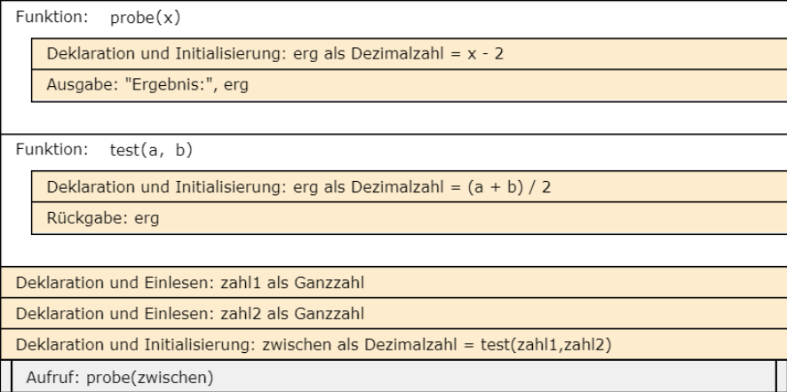

zahl_x = 4
zahl_y = 2
ergebnis = 100
counter = 1
for i in range(5,10):
ergebnis = zahl_x + zahl_y ** i
print("Ergebnis Nr.", counter ,'-', ergebnis)
counter = counter + 1Klassenarbeit 2: Einführung in Programmierung mit python
Ihr Name:
Aufgabe 1: Struktogramm erstellen [4 P]
Erstellen Sie ein Struktogramm zu dem folgenden Python-Code
Hier soll das Struktogramm als Screenshot eingefügt werden
Korrekturfeld, bitte nicht ändern.
Aufgabe 2: Struktogramm übersetzen [6 P]
Übersetzen Sie das folgende Struktogramm in Python.

# Ihre Lösung bitte hier eintragenKorrekturfeld, bitte nicht ändern.
Aufgabe 3: Notenberechnung [4 P]
Erstellen Sie ein Python-Programm, das den Benutzer nach den Noten für drei Fächer fragt und den Durchschnitt berechnet.
Geben Sie eine Nachricht aus, die den Durchschnitt anzeigt und eine Bewertung basierend auf dem Durchschnitt abgibt.
Wenn der Durchschnitt kleiner als 4.0 ist, kommt eine Textmeldung “Sie haben bestanden!”, sonst “Leider nicht bestanden. Viel Erfolg beim nächsten Mal!”
Erwartete Ausgabe:
Geben Sie die Note für Fach 1 ein: 2.5
Geben Sie die Note für Fach 2 ein: 3.0
Geben Sie die Note für Fach 3 ein: 4.0
Der Durchschnitt ist: 3.1666666666666665
Sie haben bestanden!# Ihre Lösung bitte hier eintragenKorrekturfeld, bitte nicht ändern.
Aufgabe 4: Snack-Bestellung [6 P]
Vervollständigen Sie den unten stehenden Code, um den Gesamtpreis für eine Snack-Bestellung zu berechnen und eine Rechnung auszugeben. Der Preis für einen Snack beträgt 3 Euro.
Erwartete Ausgabe:
Geben Sie Ihren Namen ein: Steffi
Wie viele Snacks möchten Sie bestellen? 12
------------------------------
Snack-Rechnung für Steffi
------------------------------
Zu zahlender Betrag: 36 €
def berechne_betrag(preis, menge):
# Hier fehlt was
def erstelle_rechnung(zahlungsbetrag, name):
# Hier fehlt was
name = input("Geben Sie Ihren Namen ein: ")
anzahl_snacks = int(input("Wie viele Snacks möchten Sie bestellen? "))
# Hier fehlt wasKorrekturfeld, bitte nicht ändern.
Aufgabe 5: Volumen eines Kegels [4 P]
Entwickeln Sie ein Python-Programm, das das Volumen (V) eines Kegels berechnet. Fragen Sie den Benutzer nach dem Radius (r) und der Höhe (h) des Kegels in cm und verwenden Sie die Formel: \[V = 1/3\ \pi\ r^2\ h\]
Überprüfen Sie, ob die Eingaben positiv sind, sonst erscheint die Textmeldung “Falsche Eingabe. Der Radius und die Höhe müssen positiv sein.”
Die Zahl \(\pi\) können sie durch 3.14 ersetzen.
Erwartete Ausgabe:
Geben Sie den Radius des Kegels ein: 3
Geben Sie die Höhe des Kegels ein: 4
Das Volumen des Kegels beträgt: 37.68
# Ihre Lösung bitte hier eintragenKorrekturfeld, bitte nicht ändern.
Aufgabe 6: Berechnungstabelle für Quadratzahlen [6 P]
Entwickeln Sie ein Programm, das eine Berechnungstabelle für die Quadratzahlen der ersten n natürlichen Zahlen erstellt. Der Benutzer gibt n ein, und das Programm gibt eine Tabelle mit den Zahlen und ihren Quadraten aus.
Erwartete Ausgabe:
Geben Sie eine positive ganze Zahl ein: 7
-----------------
Zahl Quadrat
-----------------
1 1
2 4
3 9
4 16
5 25
6 36
7 49
# Ihre Lösung bitte hier eintragenKorrekturfeld, bitte nicht ändern.